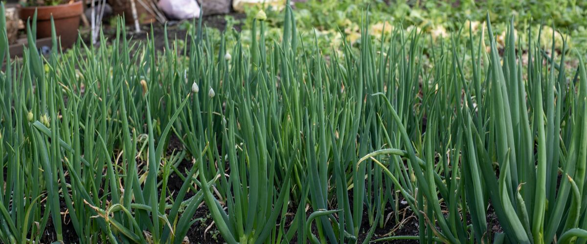

Plant guides · Oregon · Washington · Idaho
Growing Onions
Small onions usually come down to the wrong type or a late start. How to pick long-day onions, choose seeds, sets or starts, and grow bulbs that keep.
Onions look like the easiest thing in the garden. You push a little bulb into the soil in spring and dig up a big one in August. Plenty of Northwest gardeners end up with onions the size of a golf ball instead, or a row that sends up flower stalks in June. Nearly every time, the cause is one of two things: the wrong type of onion, or planting too late.
Why "long-day" matters
An onion doesn't start making a bulb when it reaches a certain size. It starts when the days get long enough. From then on it stops making new leaves and puts its energy into swelling the bulb.
Onion varieties fall into three groups by the day length that sets them off:
- Short-day onions start bulbing at roughly 10 to 12 hours of daylight. They're bred for the southern U.S.
- Intermediate (sometimes sold as day-neutral) onions start at roughly 12 to 14 hours.
- Long-day onions wait for 14 hours or more.
Oregon, Washington and Idaho are far enough north that summer days run well past 15 hours, so long-day onions are the right choice. Short-day onions planted here start bulbing in spring while the plant is still small, and you get small bulbs. Intermediate types can work, but long-day ones usually do best. Most seed catalogs and onion-start sellers list the type. If a packet doesn't say, look it up before you buy.
Why early planting matters
The other half of the story is timing. How big the bulb gets depends on how many healthy leaves the plant has grown before bulbing kicks in. Growers often put it as one leaf for each ring of the onion. An onion planted in May has only a few weeks to grow leaves before the long days of June switch it over, so it ends up smaller.
That's why onions go in early. They're one of the first things planted in spring, a few weeks before the last frost, and they don't mind cold. On our calendars the window is about Mar 1 – Apr 5 in Portland and Seattle, Mar 20 – Apr 24 in Boise, Apr 1 – May 6 in Spokane and Apr 28 – Jun 2 around Bend. Check onion planting dates for your town.
Seeds, sets or starts?
Seeds give you the most varieties to choose from and cost the least. They're also the slowest. Start them indoors in January or February, about 8 to 10 weeks before you plan to set them out. Give the seedlings a haircut to 3 or 4 inches whenever they get floppy; they'll grow back sturdier. Our guide to starting seeds indoors covers lights and trays.
Sets are small dry bulbs grown the summer before. They're the easiest to plant and the most forgiving. The catch is that big sets are more likely to bolt, meaning they send up a flower stalk and stop growing the bulb. Pick sets about the size of a marble or smaller. Sets often aren't labeled by day length, so you have less control over what you're getting.
Starts, sold as bundles of young plants, are a good middle ground. Garden centers and mail-order seed companies sell them in early spring, usually labeled by day length, and they can make full-size bulbs without the wait of growing from seed.
Planting
- Pick a sunny spot with loose soil that drains. On heavy, wet ground, a raised bed makes a big difference.
- Mix in compost first. Onions have small, shallow roots and need steady food and moisture close to the surface.
- Plant sets about an inch deep and starts just deep enough to stand up. Space them 4 to 6 inches apart for full-size bulbs. You can plant closer and pull every other one early as green onions.
- Keep the bed weeded. Onion leaves are thin and upright and shade almost nothing, so weeds overtake them fast.
Through the summer
Water steadily, about an inch a week, through June and July while the bulbs are swelling. West of the Cascades, spring rain covers this for a while, but by July you'll be watering. Uneven watering can split bulbs. Once the tops start falling over on their own, usually in late July or August, stop watering so the bulbs can firm up.
If a plant sends up a flower stalk, pull it and use it in the kitchen soon. A bolted onion has a hard core and won't store.
Onion maggots
In much of the Northwest, the onion maggot is the main pest. A small fly lays eggs at the base of the plants in spring, and the white maggots tunnel into the bulbs and can kill young plants outright. The most reliable fix is to cover the bed with row cover right after planting and keep it sealed at the edges through late spring. It also helps to plant onions somewhere other than where any onion-family crop grew last year, and to pull and toss damaged plants, which draw more flies.
Harvesting and curing
When most of the tops have flopped over and started to yellow, pull the onions on a dry day. Then cure them: spread them out in a single layer somewhere warm, dry and airy, like a covered porch, carport or garage with the door open, for two to three weeks. They're ready when the necks are dry and tight and the skins rustle. In a damp late summer, curing them under cover matters a lot. Onions that go into storage with moist necks tend to rot.
Store cured onions somewhere cool and dry, in mesh bags or with the tops braided. Pungent storage onions keep for months. Sweet onions don't last nearly as long, so eat those first.
A word on Walla Walla Sweets
Walla Walla Sweets are the Northwest's own famous onion, and commercial growers raise them differently from most onions: they're sown in late summer, spend the winter in the field and are pulled in early summer. Home gardeners can grow them that way too, or plant spring starts and harvest them later in summer. Either way they're mild and juicy but don't keep long, so plan to eat them within a few weeks.
If you're also growing garlic, our guide to planting garlic in the Northwest covers fall planting. With Portland's last frost around March 13, onions and garlic are two of the earliest jobs of the year.